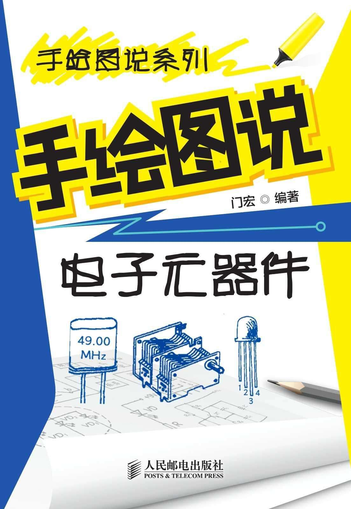
手绘图说系列
手绘图说电子元器件
门宏◎编著
人民邮电出版社
北京
织给读者朋友的“围脖”
读者朋友们，大家好！
您也许正在实时观看伦敦奥运会的激烈赛事，也许正在回顾天宫一号与神舟九号对接的精彩画面，也许正在与大洋彼岸的亲人视频聊天，也许正在网络世界里淘宝……而与此同时，空调系统正为您创造舒适的环境，自动洗衣机正为您清洗衣服，新一代微波炉正为您烹饪美食，智能按摩椅正为您解除疲劳……朋友，您知道吗，这一切的一切都是电子技术不断发展的结果。
看着这“围脖”的读者朋友，相信都是电子技术的爱好者，即便不是老将也是大有希望的新秀。现在，我们就有共同语言了，因为我们有了共同的朋友——电子。
曾不止一次有初学者朋友问：怎样才能又好又快地学会电子技术呢？作为作者也在问自己：能给读者多提供一些什么帮助呢？这时我们想到了学校，想到了教室，想到了课堂。我们都曾经或正在做学生，或许我们都有这样的切身体会，在课堂上学习的效果远比自己看书好。于是，一个独特的想法闪现了——作者与编辑共同策划了这套“手绘图说系列”丛书奉献给读者朋友。
“手绘图说系列”丛书努力营造课堂的氛围。所有的图都是原汁原味的手绘，恰似老师在黑板上画图。所有的文字都口语化，恰似老师在讲课。这套丛书将带给您身临其境、耳濡目染的感受，帮助您加深理解，收到良好的学习效果。
《手绘图说电子元器件》是“手绘图说系列”丛书中的一本，为您讲解各种电子元器件的种类、符号、参数、特点、工作原理与用途。全书共分9章，第1章讲解电阻器与电位器，第2章讲解电容器，第3章讲解电感器与变压器，第4章讲解电声转换器件，第5章讲解控制与保护器件，第6章讲解晶体二极管与单结晶体管，第7章讲解晶体三极管与晶闸管，第8章讲解光电器件，第9章讲解集成电路。相信本书能够带给您实实在在的帮助。
参加本书编写的还有门雁菊、施鹏、张元景、吴敏等。本书适合广大电子技术爱好者、家电维修人员和相关从业人员阅读学习，并可作为职业技术学校和务工人员上岗培训的基础教材。
如果您认为本书对学习电子技术很有帮助的话，那是作者的荣幸。书中如有不妥之处，请您一定要批评指正——因为我们是朋友嘛，而且作者的水平也是有限的。
感谢您耐心看完这些话。祝您成功，祝您好运！
编著者
目录
1.1 电阻器
1.1.1 电阻器的种类
1.1.2 电阻器的符号
1.1.3 电阻器的型号
1.1.4 电阻器的参数
1.1.5 电阻器的特点与工作原理
1.1.6 电阻器的作用
1.1.7 常用电阻器
1.2 敏感电阻器
1.2.1 敏感电阻器的种类
1.2.2 敏感电阻器的型号
1.2.3 压敏电阻器
1.2.4 热敏电阻器
1.2.5 光敏电阻器
1.3 电位器
1.3.1 电位器的种类
1.3.2 电位器的符号
1.3.3 电位器的型号
1.3.4 电位器的参数
1.3.5 电位器的特点与工作原理
1.3.6 电位器的作用
1.3.7 常用电位器
2.1 固定电容器
2.1.1 电容器的种类
2.1.2 电容器的符号
2.1.3 电容器的型号
2.1.4 电容器的参数
2.1.5 电容器的特点与工作原理
2.1.6 电容器的作用
2.1.7 常用电容器
2.2 可变电容器
2.2.1 可变电容器的种类
2.2.2 可变电容器的符号
2.2.3 可变电容器的结构
2.2.4 可变电容器的参数
2.2.5 可变电容器的特点与工作原理
2.2.6 可变电容器的作用
2.2.7 常用可变电容器
3.1 电感器
3.1.1 电感器的种类
3.1.2 电感器的符号
3.1.3 电感器的型号
3.1.4 电感器的参数
3.1.5 电感器的特点与工作原理
3.1.6 电感器的作用
3.1.7 常用电感器
3.2 变压器
3.2.1 变压器的种类
3.2.2 变压器的符号
3.2.3 变压器的特点与工作原理
3.2.4 变压器的基本作用
3.2.5 电源变压器
3.2.6 音频变压器
3.2.7 中频变压器
3.2.8 高频变压器
4.1 扬声器
4.1.1 扬声器的种类
4.1.2 扬声器的符号
4.1.3 扬声器的型号
4.1.4 扬声器的参数
4.1.5 电动式扬声器
4.1.6 压电式扬声器
4.1.7 球顶式扬声器
4.1.8 号筒式扬声器
4.2 耳机
4.2.1 耳机的种类
4.2.2 耳机的符号
4.2.3 耳机的型号
4.2.4 耳机的参数
4.2.5 单声道耳机
4.2.6 双声道耳机
4.3 电磁讯响器
4.3.1 电磁讯响器的种类
4.3.2 电磁讯响器的符号
4.3.3 电磁讯响器的参数
4.3.4 电磁讯响器的特点
4.3.5 不带音源讯响器
4.3.6 自带音源讯响器
4.4 压电蜂鸣器
4.4.1 压电蜂鸣器的符号
4.4.2 压电蜂鸣器的工作原理
4.4.3 压电蜂鸣器的特点
4.4.4 压电蜂鸣器的作用
4.5 传声器
4.5.1 传声器的种类
4.5.2 传声器的符号
4.5.3 传声器的型号
4.5.4 传声器的参数
4.5.5 动圈式传声器
4.5.6 驻极体传声器
4.5.7 近讲传声器
4.5.8 无线传声器
4.6 晶体
4.6.1 晶体的种类
4.6.2 晶体的符号
4.6.3 晶体的型号
4.6.4 晶体的参数
4.6.5 晶体的特点
4.6.6 晶体的作用
5.1 继电器
5.1.1 继电器的种类
5.1.2 继电器的符号
5.1.3 继电器的型号
5.1.4 继电器的参数
5.1.5 继电器的作用
5.1.6 电磁继电器
5.1.7 干簧继电器
5.1.8 固态继电器
5.1.9 时间继电器
5.1.10 热继电器
5.2 开关
5.2.1 开关的种类
5.2.2 开关的符号
5.2.3 开关的参数
5.2.4 拨动开关
5.2.5 旋转开关
5.2.6 按钮开关
5.2.7 微动开关和轻触开关
5.2.8 薄膜开关
5.3 接插件
5.3.1 接插件的种类
5.3.2 接插件的符号
5.3.3 常用接插件
5.4 保险器件
5.4.1 保险器件的种类
5.4.2 保险器件的符号
5.4.3 保险器件的参数
5.4.4 保险器件的工作原理
5.4.5 常用保险器件
6.1 晶体二极管
6.1.1 晶体二极管的种类
6.1.2 晶体二极管的符号
6.1.3 晶体二极管的型号
6.1.4 晶体二极管的极性
6.1.5 晶体二极管的参数
6.1.6 晶体二极管的特点与工作原理
6.1.7 晶体二极管的作用
6.1.8 检波二极管
6.1.9 整流二极管与整流桥堆
6.1.10 开关二极管
6.1.11 变容二极管
6.2 稳压二极管
6.2.1 稳压二极管的种类
6.2.2 稳压二极管的符号
6.2.3 稳压二极管的极性
6.2.4 稳压二极管的参数
6.2.5 稳压二极管的特点与工作原理
6.2.6 稳压二极管的作用
6.2.7 特殊稳压二极管
6.3 单结晶体管
6.3.1 单结晶体管的种类
6.3.2 单结晶体管的符号
6.3.3 单结晶体管的型号
6.3.4 单结晶体管的引脚
6.3.5 单结晶体管的参数
6.3.6 单结晶体管的特点与工作原理
6.3.7 单结晶体管的作用
7.1 晶体三极管
7.1.1 晶体三极管的种类
7.1.2 晶体三极管的符号
7.1.3 晶体三极管的型号
7.1.4 晶体三极管的引脚
7.1.5 晶体三极管的参数
7.1.6 晶体三极管的特点与工作原理
7.1.7 晶体三极管的作用
7.1.8 常用晶体三极管
7.1.9 特殊晶体三极管
7.2 场效应管
7.2.1 场效应管的种类
7.2.2 场效应管的符号
7.2.3 场效应管的引脚
7.2.4 场效应管的参数
7.2.5 场效应管的特点与工作原理
7.2.6 场效应管的作用
7.2.7 常用场效应管
7.3 晶闸管
7.3.1 晶闸管的种类
7.3.2 晶闸管的符号
7.3.3 晶闸管的型号
7.3.4 晶闸管的引脚
7.3.5 晶闸管的参数
7.3.6 晶闸管的特点
7.3.7 单向晶闸管
7.3.8 双向晶闸管
7.3.9 可关断晶闸管
8.1 光电二极管
8.1.1 光电二极管的种类
8.1.2 光电二极管的符号
8.1.3 光电二极管的型号
8.1.4 光电二极管的极性
8.1.5 光电二极管的参数
8.1.6 光电二极管的特点与工作原理
8.1.7 光电二极管的作用
8.2 光电三极管
8.2.1 光电三极管的种类
8.2.2 光电三极管的符号
8.2.3 光电三极管的型号
8.2.4 光电三极管的引脚
8.2.5 光电三极管的参数
8.2.6 光电三极管的特点与工作原理
8.2.7 光电三极管的作用
8.3 光电耦合器
8.3.1 光电耦合器的种类
8.3.2 光电耦合器的符号
8.3.3 光电耦合器的引脚
8.3.4 光电耦合器的参数
8.3.5 光电耦合器的特点
8.3.6 光电耦合器的作用
8.4 发光二极管
8.4.1 发光二极管的种类
8.4.2 发光二极管的符号
8.4.3 发光二极管的极性
8.4.4 发光二极管的参数
8.4.5 发光二极管的特点
8.4.6 发光二极管的作用
8.4.7 特殊发光二极管
8.5 LED数码管
8.5.1 LED 数码管的种类
8.5.2 LED 数码管的符号
8.5.3 LED 数码管的引脚
8.5.4 LED 数码管的特点与工作原理
8.5.5 LED 数码管的作用
9.1 集成运放
9.1.1 集成运放的种类
9.1.2 集成运放的符号
9.1.3 集成运放的参数
9.1.4 集成运放的电路结构
9.1.5 集成运放的工作原理
9.1.6 集成运放的应用
9.2 时基集成电路
9.2.1 时基集成电路的种类
9.2.2 时基集成电路的符号
9.2.3 时基集成电路的参数
9.2.4 时基集成电路的结构特点
9.2.5 时基集成电路的工作原理
9.2.6 时基集成电路的应用
9.3 集成稳压器
9.3.1 集成稳压器的种类
9.3.2 集成稳压器的符号
9.3.3 集成稳压器的参数
9.3.4 集成稳压器的工作原理
9.3.5 集成稳压器的应用
9.4 数字集成电路
9.4.1 门电路
9.4.2 触发器
9.4.3 计数器
9.4.4 译码器
9.4.5 移位寄存器
第1章 电阻器与电位器
电阻器是最基本的电子元件，电位器是最基本的可调电子元件，它们广泛应用在各种电子电路中。
1.1 电阻器
要点提示
电阻器是限制电流的元件，通常简称为电阻，是一种最基本、最常用的电子元件，包括固定电阻器、可变电阻器、敏感电阻器等。
电阻器的文字符号为“R”。
电阻器的主要参数有电阻值和额定功率。
电阻值简称阻值，基本单位是欧姆，简称欧（Ω）。常用单位还有千欧（kΩ）和兆欧（MΩ）。
电阻器的特点是对直流和交流一视同仁，任何电流通过电阻器都要受到一定的阻碍和限制。
电阻器的主要作用是限流与降压，还可以用作分压器。
电阻器是限制电流的元件，通常简称为电阻，是一种最基本、最常用的电子元件。电阻器包括固定电阻器、可变电阻器、敏感电阻器等。
由于制造材料和结构不同，电阻器有许多种类，常见的有：碳膜电阻器、金属膜电阻器、有机实心电阻器、线绕电阻器、固定抽头电阻器、可变电阻器、滑线式变阻器和片状电阻器等，如图1-1所示。
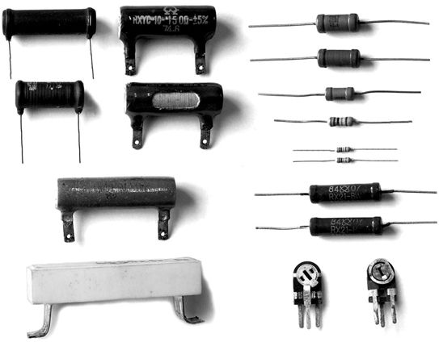
图1-1 电阻器外形
在电子制作中一般常用碳膜或金属膜电阻器。碳膜电阻器具有稳定性较高、高频特性好、负温度系数小、脉冲负荷稳定及成本低廉等特点，应用广泛。金属膜电阻器具有稳定性高、温度系数小、耐热性能好、噪声很小、工作频率范围宽及体积小等特点，应用也很广泛。
电阻器的文字符号为“R”，图形符号如图1-2所示。
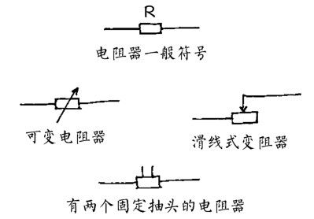
图1-2 电阻器的图形符号
电阻器的型号命名由4个部分组成，如图1-3所示。第一部分用字母“R”表示电阻器的主称，第二部分用字母表示构成电阻器的材料，第三部分用数字或字母表示电阻器的分类，第四部分用数字表示序号。
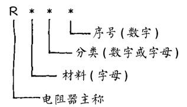
图1-3 电阻器的型号
电阻器型号的含义见表1-1。例如：型号为RT11，表示这是普通碳膜电阻器；型号为RJ71，表示这是精密金属膜电阻器。
表1-1 电阻器型号的含义
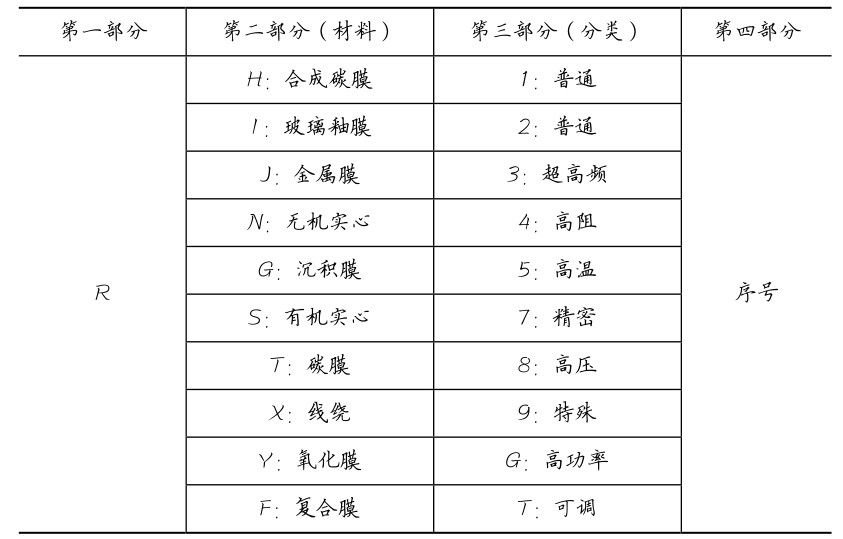
电阻器的主要参数有电阻值和额定功率。
1．电阻值
电阻值简称阻值，基本单位是欧姆，简称欧（Ω）。常用单位还有千欧（kΩ）和兆欧（MΩ）。它们之间的换算关系是：1MΩ=1000kΩ， 1kΩ=1000Ω。
2．电阻器上阻值的标示方法
电阻器上阻值的标示方法有两种。
（1）直标法，即将电阻值直接印刷在电阻器上。例如：在5.1Ω的电阻器上印有“5.1”或“5R1”字样，在6.8kΩ的电阻器上印有“6.8k”或“6k8”字样，如图1-4所示。
（2）色环法，即在电阻器上印刷4道或5道色环来表示阻值等，阻值的单位为Ω。
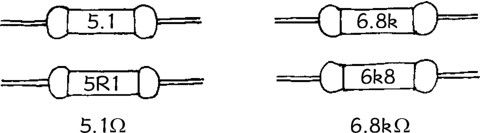
图1-4 电阻值直标法
对于4环电阻器，第1、2环表示2位有效数字，第3环表示倍乘数，第4环表示允许偏差，如图1-5所示。
对于5环电阻器，第1、2、3环表示3位有效数字，第4环表示倍乘数，第5环表示允许偏差，如图1-6所示。
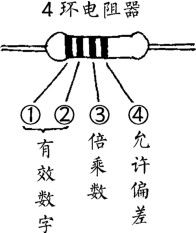
图1-5 4 环电阻器
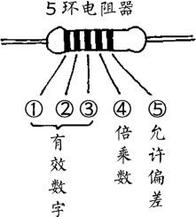
图1-6 5 环电阻器
色环一般采用黑、棕、红、橙、黄、绿、蓝、紫、灰、白、金、银12种颜色，它们的含义见表1-2。例如：某电阻器的4道色环依次为“黄、紫、橙、银”，则其阻值为 47kΩ，误差为±10%；某电阻器的 5 道色环依次为“红、黄、黑、橙、金”，则其阻值为240kΩ，误差为±5%。
表1-2 色环颜色的含义
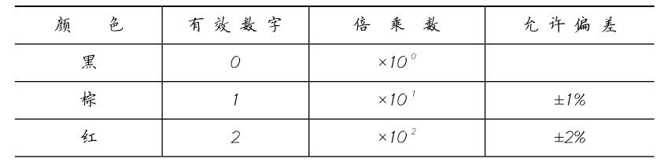
续表
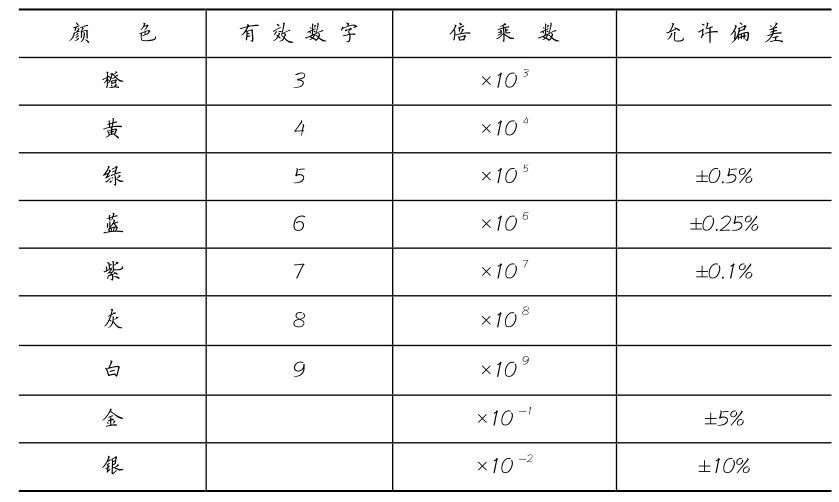
在电子制作中，选用4环或5环电阻均可。在选频回路、偏置电路等电路中，应尽量选用误差小的电阻，必要时可用欧姆表检测挑选。
3．额定功率
额定功率是电阻器的另一个主要参数，常用电阻器的功率有
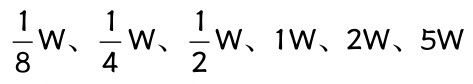
等，其符号如图1-7所示，大于5W的直接用数字注明。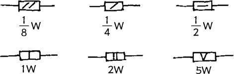
图1-7 电阻器功率符号
使用中应选用额定功率等于或大于电路要求的电阻器。电路图中不作标示的表示该电阻器工作中消耗功率很小，可不必考虑。例如：大部分业余电子制作中对电阻器功率都没有要求，这时可选用
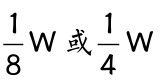
电阻器。电阻器的特点是对直流和交流一视同仁，任何电流通过电阻器都要受到一定的阻碍和限制，并且该电流必然在电阻器上产生电压降，如图1-8所示。
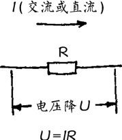
图1-8 电阻器的特点
电阻器的主要作用是限流与降压。
1．限流
电阻器在电路中限制电流的通过，电阻值越大电流越小。
图1-9所示发光二极管电路中，R为限流电阻。从欧姆定律I=U/R可知，当电压U一定时，流过电阻器的电流I与其阻值R成反比。由于限流电阻R的存在，发光二极管VD的电流被限制在10mA，保证VD正常工作。
调整晶体管的工作点是电阻器用作限流的一个例子。图 1-10所示为晶体管放大电路，晶体管集电极电流I c （工作点）由其基极电流I b 决定。改变晶体管基极电阻R b 的阻值，即可改变I b ，也就是改变了I c ，即改变了晶体管的工作点。
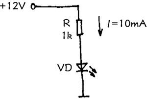
图1-9 电阻器限流
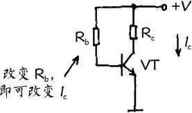
图1-10 基极电阻的作用
2．降压
电流通过电阻器时必然会产生电压降，电阻值越大电压降越大。
图1-11所示继电器电路中，R为降压电阻。电压降U的大小与电阻值R和电流I的乘积成正比，即：U =I R。利用电阻器R的降压作用，可以使较高的电源电压适应元器件工作电压的要求。例如：图 1-11 所示电路中，继电器工作电压为 6V、工作电流为60mA，而电源电压为12V，必须串接一个100Ω的降压电阻R后，方可正常工作。
放大器的负载电阻也是利用电阻器的降压作用的例子。图1-12所示晶体管放大电路中，集电极电阻R c 即是负载电阻。输入信号U i 使晶体管集电极电流I c 相应变化，由于R c 的降压作用，从VT集电极即可得到放大后的输出电压U o （与U i 反相）。
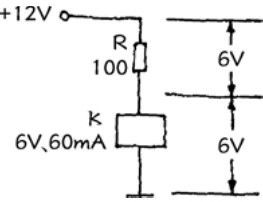
图1-11 电阻器降压
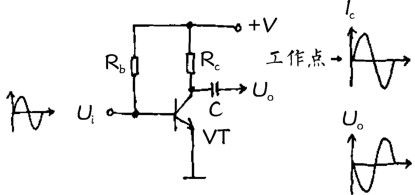
图1-12 负载电阻的作用
3．分压
基于电阻的降压作用，电阻器还可以用作分压器。
如图1-13所示，电阻器R 1 和R 2 构成一个分压器，由于两个电阻串联，通过这两个电阻的电流I相等，而电阻上的压降U =I R， R 1 上压降为
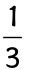
U，R 2 上压降为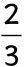
U，实现了分压（负载电阻必须远大于R 1 、R 2 ），分压比为R 1 /R 2 。RC滤波网络是一种特殊的分压器。图1-14所示整流滤波电路中，R与C 2 可理解为分压器，输出电压U o 取自C 2 上的压降。对于直流，C 2 的容抗无限大；而对于交流，C 2 的容抗远小于R。因此C 2 上直流压降很大而交流压降很小，达到了滤波的目的。
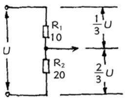
图1-13 电阻器分压
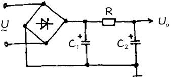
图1-14 RC 滤波网络
常用电阻器主要有碳膜电阻器、金属膜电阻器、有机实心电阻器、玻璃釉电阻器、线绕电阻器、水泥电阻器、熔断电阻器等，下面逐一介绍。
1．碳膜电阻器
碳膜电阻器是较常用的电阻器之一，其结构如图1-15所示。它是在陶瓷骨架上形成一层碳膜作为电阻体，再加上金属帽盖和引线制成的，外表涂有绝缘保护漆。
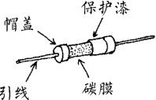
图1-15 碳膜电阻器结构
碳膜电阻器的性能特点是稳定性良好，受电压影响小，负温度系数小，适用频率较宽，噪声较小，价格低廉。碳膜电阻器的阻值范围通常为 1Ω～10MΩ，在各种电子电路中应用十分广泛。
2．金属膜电阻器
金属膜电阻器是最常用的电阻器之一，其结构如图1-16所示。它是在陶瓷骨架上形成一层金属或合金薄膜作为电阻体，两端加上金属帽盖和引线，外表涂有绝缘保护漆。
金属膜电阻器的性能特点是稳定性高，受电压影响更小，温度系数小，耐热性能好，噪声很小，工作频率范围宽，高频特性好，体积比相同功率的碳膜电阻器小许多。金属膜电阻器的阻值范围通常为1Ω～1000MΩ，应用非常广泛。
3．有机实心电阻器
有机实心电阻器结构如图1-17所示。其电阻体是用炭黑、石墨等导电物质粉末，混合有机黏合剂制成的实心圆柱体，两端加上引线，外面有塑料外壳。
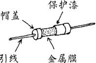
图1-16 金属膜电阻器结构
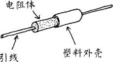
图1-17 有机实心电阻器结构
有机实心电阻器的性能特点是机械强度高，过负荷能力较强，可靠性较好，体积小，价格低廉，但噪声较大，稳定性差。有机实心电阻器的阻值范围通常为4.7Ω～22MΩ，一般用于要求不太高的电路中。
4．玻璃釉电阻器
玻璃釉电阻器结构如图1-18所示。它是在陶瓷骨架上涂覆一层金属氧化物和玻璃釉黏合剂的混合物作为电阻体，经高温烧结而成。
玻璃釉电阻器的性能特点是耐高温和耐高湿性好，稳定性好，噪声和温度系数小，可靠性高。玻璃釉电阻器的阻值范围通常为4.7Ω～200MΩ，常用于高阻、高压、高温等场合。
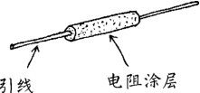
图1-18 玻璃釉电阻器结构
5．线绕电阻器
线绕电阻器也是较常用的电阻器之一，其结构如图1-19所示。线绕电阻器的电阻体是电阻丝，将电阻丝绕在陶瓷骨架上，连接好引线，表面涂敷一层玻璃釉或绝缘漆即制成线绕电阻器。
线绕电阻器的性能特点是噪声极小，耐高温，功率大，稳定性好，温度系数小，精密度高，但高频特性较差。线绕电阻器的阻值范围通常为0.1Ω～5MΩ，特别适用于高温和大功率场合。
6．水泥电阻器
水泥电阻器是陶瓷密封功率型线绕电阻器的习惯称呼，其结构如图1-20所示。线绕电阻体放置在陶瓷外壳中，并用封装填料密封，仅留两端引线在外。
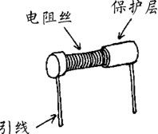
图1-19 线绕电阻器结构
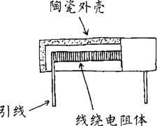
图1-20 水泥电阻器结构
水泥电阻器的性能特点是功率大，耐高温，绝缘性能好，稳定性和过载能力较好，并具有良好的阻燃、防爆性能。水泥电阻器的阻值范围通常为0.1Ω～4.3kΩ，主要应用于大功率、低阻值场合。
7．熔断电阻器
熔断电阻器又称为保险电阻器，是一种兼有电阻器和保险丝（术语为熔丝）双重功能的特殊元件。熔断电阻器的文字符号为“RF”，图形符号如图1-21所示。
熔断电阻器的阻值一般较小，其主要功能还是保险。使用熔断电阻器可以只用一个元件就能同时起到限流和保险作用。
图1-22所示为大功率驱动晶体管应用熔断电阻器的例子。电路工作正常时熔断电阻器RF起着限流电阻的作用。一旦负载电路发生过载或者短路，熔断电阻器RF就迅速熔断，起到保护晶体管的作用。
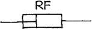
图1-21 熔断电阻器的图形符号
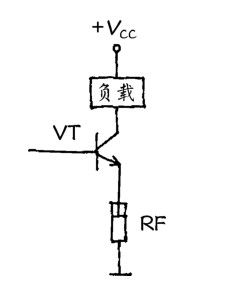
图1-22 熔断电阻器的应用
1.2 敏感电阻器
要点提示
敏感电阻器是一类对电压、温度、湿度、光或磁场等物理量变化敏感的电阻元件，包括压敏电阻器、热敏电阻器、光敏电阻器、湿敏电阻器、气敏电阻器、力敏电阻器及磁敏电阻器等。
压敏电阻器的文字符号为“RV”。
压敏电阻器的特点是当外加电压达到其临界值时其阻值会急剧变小，主要用于过压保护和抑制浪涌电流。
热敏电阻器的文字符号为“RT”。
热敏电阻器的特点是其阻值会随温度的变化而变化，有正温度系数和负温度系数两种，主要作用是进行温度检测。
光敏电阻器的特点是其阻值会随入射光线的强弱而变化，光线越强阻值越小，主要作用是进行光的检测。
电阻器家族中除普通电阻器外，还有一些敏感电阻器。敏感电阻器起着传感器的作用。
敏感电阻器是一类对电压、温度、湿度、光或磁场等物理量变化敏感的电阻元件，包括压敏电阻器、热敏电阻器、光敏电阻器、湿敏电阻器、气敏电阻器、力敏电阻器及磁敏电阻器等。
敏感电阻器的型号命名由4个部分组成，如图1-23所示。第一部分用字母“M”表示敏感电阻器的主称，第二部分用字母表示类别，第三部分用字母或数字表示用途或特征，第四部分用数字表示序号。
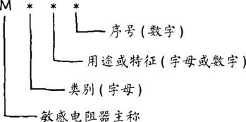
图1-23 敏感电阻器的型号
敏感电阻器型号的含义见表1-3、表1-4和表1-5。例如：型号为MF11，表示这是普通负温度系数热敏电阻器；型号为MG41，表示这是可见光光敏电阻器。
表1-3 敏感电阻器型号的含义
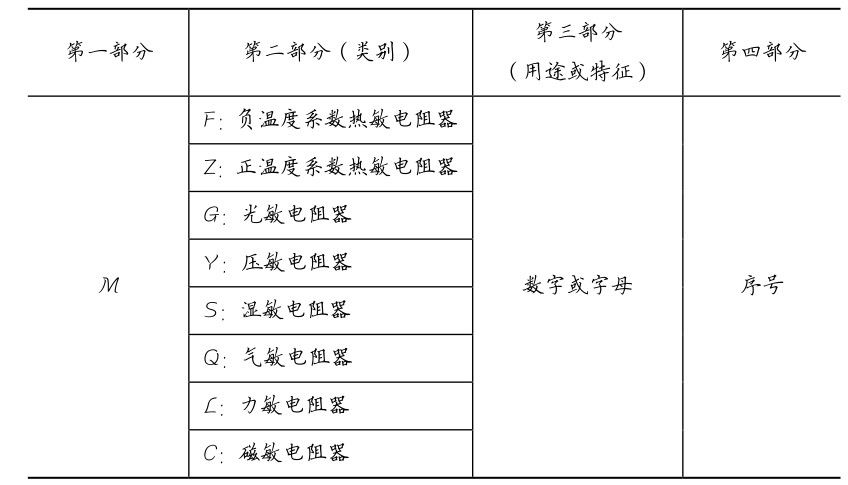
表1-4 敏感电阻器型号中第三部分数字代号的含义
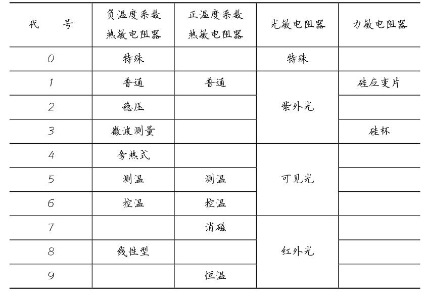
表1-5 敏感电阻器型号中第三部分字母代号的含义
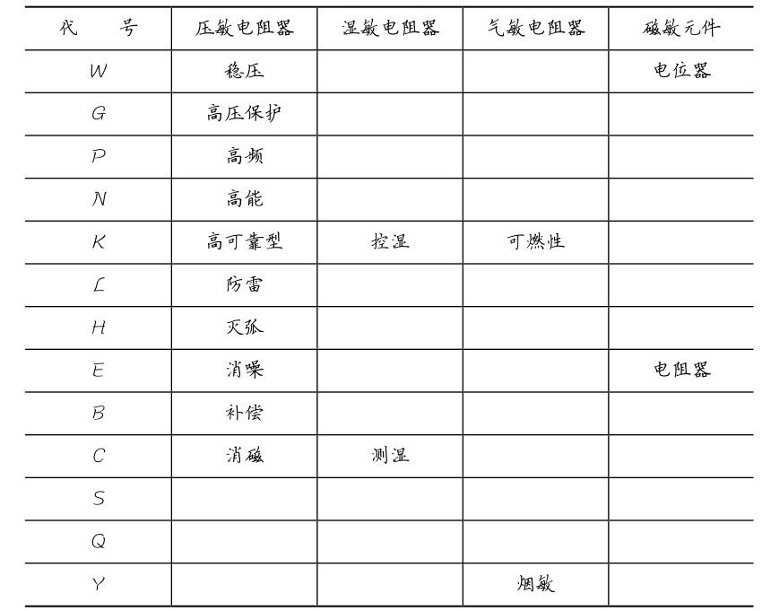
压敏电阻器是利用半导体材料的非线性特性原理制成的，其电阻值与电压之间为非线性关系。压敏电阻器的文字符号为“RV”，图形符号和外形如图1-24所示。
压敏电阻器的特点是当外加电压达到其临界值时，其阻值会急剧变小。
压敏电阻器的主要作用是过压保护和抑制浪涌电流。图1-25所示为电源输入电路，压敏电阻器RV跨接于电源变压器 T 的初级两端，正常情况下由于RV的阻值很大，对电路无影响。当电源输入端一旦出现超过 RV 临界值的过高电压时，RV 阻值急剧减小，电流剧增，使保险丝FU熔断，保护电路不被损坏。
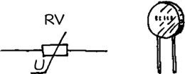
图1-24 压敏电阻器
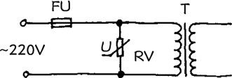
图1-25 压敏电阻器的应用
热敏电阻器大多由单晶或多晶半导体材料制成，它的阻值会随温度的变化而变化。热敏电阻器的文字符号为“RT”，图形符号和外形如图1-26所示。
热敏电阻器分为正温度系数和负温度系数两种：正温度系数热敏电阻器的阻值与温度成正比，负温度系数热敏电阻器的阻值与温度成反比。
热敏电阻器的主要作用是进行温度检测，常用于自动控制、自动测温、电气设备的软启动电路等，目前用得较多的是负温度系数热敏电阻器。
图 1-27 所示为电子温度计电路，RT 为负温度系数热敏电阻器，温度越高RT阻值越小，其负载电阻R上的压降（A点电位）越大。RT 将温度变化转换为电压变化，经放大、整流后指示出来。
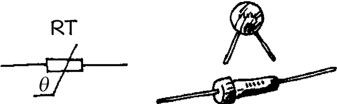
图1-26 热敏电阻器
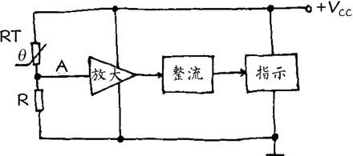
图1-27 热敏电阻器的应用
光敏电阻器大多数由半导体材料制成，它是利用半导体的光导电特性原理工作的。光敏电阻器的文字符号为“R”，图形符号和外形如图1-28所示。
光敏电阻器的特点是其阻值会随入射光线的强弱而变化，入射光线越强其阻值越小，入射光线越弱其阻值越大。光敏电阻器根据光谱特性，可分为红外光光敏电阻器、可见光光敏电阻器、紫外光光敏电阻器等。
光敏电阻器的主要作用是进行光的检测，广泛应用于自动检测、光电控制、通信、报警等电路中。图1-29所示光控电路中， R 2 为光敏电阻器，当有光照时，R 2 阻值变小，A点电位上升，使控制电路动作。
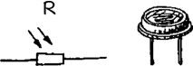
图1-28 光敏电阻器
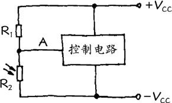
图1-29 光敏电阻器的应用
1.3 电位器
要点提示
电位器是调节分压比的元件，是一种最常用的可调电子元件。
电位器的文字符号为“RP”。
电位器的主要参数有标称阻值、阻值变化特性和额定功率。
电位器的特点是可以连续改变电阻比，常用作可变分压。
电位器是调节分压比的元件，是一种最常用的可调电子元件。电位器是从可变电阻器发展派生出来的，它由一个电阻体和一个转动或滑动系统组成，其动臂的接触刷在电阻体上滑动，即可连续改变动臂与两端间的阻值。
电位器的种类很多，如图1-30所示。电位器按结构可分为旋转式电位器、直滑式电位器、带开关电位器、双连电位器及多圈电位器等。按照电阻体所用制造材料的不同，电位器又分为碳膜电位器、金属膜电位器、有机实心电位器、无机实心电位器、玻璃釉电位器及线绕电位器等。
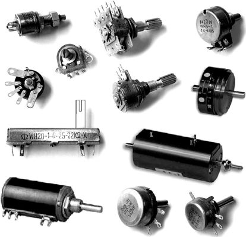
图1-30 电位器
电位器的文字符号为“RP”，图形符号如图1-31所示。
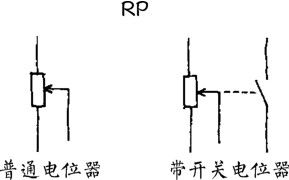
图1-31 电位器的图形符号
电位器的型号命名由4个部分组成，如图1-32所示。第一部分用字母“W”表示电位器的主称，第二部分用字母表示构成电位器电阻体的材料，第三部分用字母表示电位器的分类，第四部分用数字表示序号。
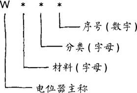
图1-32 电位器的型号
电位器型号的含义见表1-6。例如：型号为 WHJ3，表示这是精密合成碳膜电位器。
表1-6 电位器型号的含义
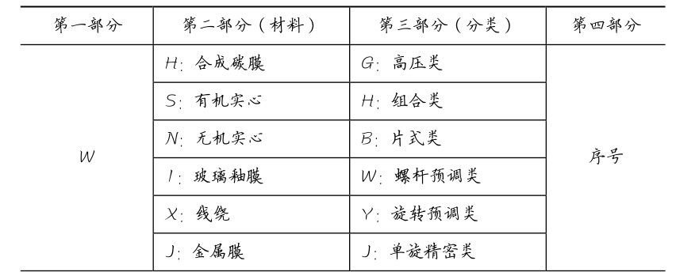
续表
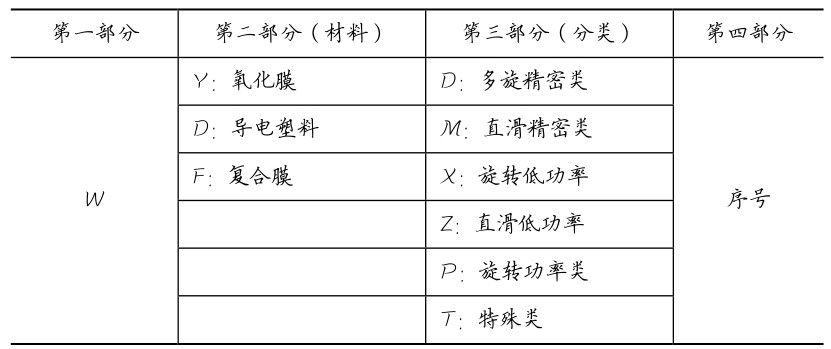
电位器的主要参数有标称阻值、阻值变化特性和额定功率。
1．标称阻值
标称阻值是指电位器的两定臂引出端之间的阻值，如图1-33所示。标称阻值通常用数字直接标示在电位器壳体上，如图1-34所示。
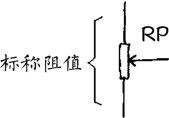
图1-33 标称阻值的含义
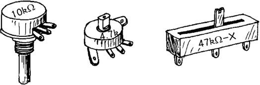
图1-34 标称阻值的标示
2．阻值变化特性
阻值变化特性是指电位器的阻值随动臂的旋转角度或滑动行程而变化的关系，常用的有直线式（X）、指数式（Z）和对数式（D），如图1-35所示。直线式适用于大多数场合，指数式适用于音量控制电路，对数式适用于音调控制电路。
3．额定功率
额定功率是指电位器在长期连续负荷下所允许承受的最大功率，使用中电位器承受的实际功率不得超过其额定功率。额定功率值通常直接标示在电位器上，如图1-36所示。
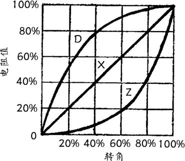
图1-35 阻值变化特性
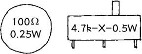
图1-36 额定功率的标示
1．电位器的特点
电位器的特点是可以连续改变电阻比。电位器的结构如图1-37 所示，电阻体的两端各有一个定臂引出端，中间是动臂引出端。动臂在电阻体上移动，即可使动臂与上下定臂引出端间的电阻比值连续变化。
2．电位器的工作原理
电位器RP可等效为电阻R a 和R b 构成的分压器。
（1）当动臂2 端处于电阻体中间时，R a = R b ，动臂 2 端输出电压为输入电压的一半，如图1-38所示。
（2）当动臂2 端向上移动时，R a 减小而R b 增大。当动臂2端移至最上端时，R a =0，R b =RP，动臂2端输出电压为输入电压的全部，如图1-39所示。
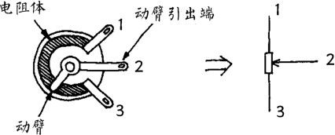
图1-37 电位器结构
图1-38 动臂位于中间时
（3）当动臂2端向下移动时，R a 增大而R b 减小。当动臂2端移至最下端时，R b =0，R a =RP，动臂2端输出电压为0，如图1-40所示。
图1-39 动臂位于上端时
图1-40 动臂位于下端时
电位器的主要作用是可变分压，分压比随电位器动臂转角的增大而增大，如图1-41所示。
图1-41 可变分压原理
图1-42所示收音机电路中，音量调节电位器RP就是可变分压的一个例子。前级信号全部加在电位器RP两端，从动臂2获得一定分压比的信号送往功放级。转动动臂改变分压比，即改变了送往功放级的信号大小，达到音量调节的目的。
由于电位器具有两个定臂引脚，在使用中，应根据电路需要确定接入方式。例如：在图1-42所示收音机电路中，音量电位器的接入方式可按以下方法判断：如果是逆时针方向转动电位器的旋柄将开关关断，则定臂3引脚为接地端，定臂1引脚为信号端，如图1-43所示。
图1-42 电位器的应用
图1-43 正确接入电位器
常用电位器主要有旋转式电位器、直滑式电位器、带开关电位器、双连电位器、多圈电位器、超小型电位器、微调电位器等。
1．旋转式电位器
旋转式电位器是最基本、最常用的电位器之一，其结构如图1-44所示。电阻体呈圆环状，动触点固定在转轴上，转动转轴时带动动触点在电阻体上移动。
图1-44 旋转式电位器结构
（1）采用碳膜电阻体的称为碳膜电位器，其特点是分辨率高，阻值范围宽，寿命长，价格低，但耐热、耐湿性较差，噪声较大。
（2）采用金属膜电阻体的称为金属膜电位器，其特点是分辨率高，耐热性好，频率范围宽，噪声较小，但耐磨性较差。
（3）采用线绕电阻体的称为线绕电位器，其特点是耐热性好，功率大，精度高，稳定性好，噪声小，但分辨率较低，高频特性差。
（4）采用实心电阻体的称为实心电位器，其特点是分辨率高，耐磨性好，阻值范围宽，可靠性高，体积小，但耐高温性差，噪声大。
2．直滑式电位器
直滑式电位器结构如图1-45所示。电阻体呈长条状，动触点固定在滑柄上，左右移动滑柄时带动动触点在电阻体上移动。直滑式电位器有利于美化电子设备的面板。
3．带开关电位器
带开关电位器实际上就是将开关附加在电位器上，并由电位器转轴控制。带开关电位器结构如图1-46所示。在电位器外壳上面有一开关，它由固定在转轴上的拨柄控制。当转轴从 0°转出时拨柄使开关接通，当转轴转回0°时拨柄使开关断开。
图1-45 直滑式电位器结构
图1-46 带开关电位器结构
4．双连电位器
双连电位器通常是将两个相同规格的电位器安装在同一个转轴上，如图1-47所示，转动转轴时两个电位器的动触点同步移动。双连电位器常用于需要同步调节的场合，例如立体声音响设备中的音量控制和音调控制。
图1-47 双连电位器外形
5．多圈电位器
大多数电位器均为单圈电位器，转轴旋转角度小于 360°，而多圈电位器的转轴旋转角度大于 360°，即可以转动一圈以上。
多圈电位器结构如图1-48所示。转轴通过蜗轮、蜗杆传动，带动动触点在电阻体上移动。转轴每转一圈，动触点只移动很小距离。动触点走完整个电阻体，转轴需要转动多圈。多圈电位器具有较高的分辨率，主要应用于精密调节电路中。
图1-48 多圈电位器结构
6．超小型电位器
超小型电位器外形如图1-49所示。它有带开关和不带开关两类，主要应用于袖珍收音机等小型电子设备中。
7．微调电位器
微调电位器外形如图1-50所示。它具有体积小、价格低廉的特点，主要应用于电路中不需要经常调节的地方。
图1-49 超小型电位器外形
图1-50 微调电位器外形
第2章 电容器
电容器是最基本、最主要的电子元件，包括固定电容器和可变电容器两大类，在电子电路中具有广泛的应用。
2.1 固定电容器
要点提示
电容器是储存电荷的元件，通常简称为电容，是一种最基本、最常用的电子元件，分为固定电容器和可变电容器两大类。
固定电容器包括无极性电容器和有极性电容器。有极性电容器引线有正、负极之分。
电容器的文字符号为“C”。
电容器的主要参数有电容量和耐压。
电容量简称容量，基本单位是法拉，简称法（F）。常用单位有微法（μF）、纳法（nF）和皮法（pF）。
电容器的特点是隔直流通交流。
电容器对交流电流具有一定的阻力，称之为容抗，交流电流的频率越高容抗越小。
电容器的主要作用是耦合、旁路、移相和谐振。
电容器是储存电荷的元件，通常简称为电容，是一种最基本、最常用的电子元件。
按电容量是否可调，电容器分为固定电容器和可变电容器两大类。固定电容器包括无极性电容器和有极性电容器，外形如图2-1所示。
图2-1 电容器
按介质材料不同，固定电容器又有许多种类。无极性固定电容器有纸介电容器、涤纶电容器、云母电容器、聚苯乙烯电容器、聚酯电容器、玻璃釉电容器及瓷介电容器等。有极性固定电容器有铝电解电容器、钽电解电容器、铌电解电容器等。
使用有极性电容器时应注意其引线有正、负极之分。在电路中，电容器正极引线应接在电位高的一端，负极引线应接在电位低的一端。如果极性接反了，会使漏电流增大并易损坏电容器。
电容器的文字符号为“C”，图形符号如图2-2所示。
图2-2 电容器的图形符号
电容器的型号命名由4个部分组成，如图2-3所示。第一部分用字母“C”表示电容器的主称，第二部分用字母表示电容器的介质材料，第三部分用数字或字母表示电容器的类别，第四部分用数字表示序号。
图2-3 电容器的型号
电容器型号中，第二部分介质材料字母代号的含义见表2-1，第三部分类别代号的含义见表2-2。
表2-1 电容器型号中介质材料代号的含义
续表
表2-2 电容器型号中类别代号的含义
续表
电容器的主要参数有电容量和耐压。
1．电容量
电容器储存电荷的能力叫做电容量，简称容量，基本单位是法拉，简称法（F）。由于法拉作单位在实际运用中往往显得太大，所以常用微法（μF）、纳法（nF）和皮法（pF）作为单位。它们之间的换算关系是：1F=10 6 μF，1μF=1000nF，1nF=1000pF。
2．电容器上容量的标示方法
电容器上容量的标示方法常见的有两种。
（1）直标法，即将容量数值直接印刷在电容器上，如图2-4所示。例如：100pF 的电容器上印有“100”字样，0.01μF 的电容器上印有“0.01”字样，2.2μF的电容器上印有“2.2μ”或“2μ2”字样，47μF 的电容器上印有“47μ”字样。有极性电容器上还印有极性标志。
（2）数码表示法，一般用3位数字表示容量的大小，其单位为pF。3位数字中，前两位是有效数字，第三位是倍乘数，即表示有效数字后有多少个“0”，如图2-5所示。
图2-4 电容量的直标法
图2-5 电容量的数码表示法
倍乘数的标示数字所代表的含义见表 2-3，标示数为 0～8时分别表示10 0 ～10 8 ，而9则表示10 −1 。例如：103表示10× 10 3 =10000pF=0.01μF，229表示22×10 −1 =2.2pF。
表2-3 电容器上倍乘数的含义
3．耐压
耐压是电容器的另一个主要参数，表示电容器在连续工作中所能承受的最高电压。耐压值一般直接印在电容器上，如图2-6所示。也有一些体积很小的小容量电容器不标示耐压值。
图2-6 耐压的标示
电路图中对电容器耐压的要求一般直接用数字标出，不作标示的可根据电路的电源电压选用电容器。使用中应保证加在电容器两端的电压不超过其耐压值，否则将会损坏电容器。
除主要参数外，电容器还有一些其他参数指标。但在实际使用中，一般只考虑容量和耐压，只有在有特殊要求的电路中，才考虑容量误差、高频损耗等参数。
电容器的特点是隔直流通交流，即直流电流不能通过电容器，交流电流可以通过电容器。
1．容抗
电容器对交流电流具有一定的阻力，称之为容抗，用符号“X C ”表示，单位为Ω。容抗等于电容器两端交流电压（有效值）与通过电容器的交流电流（有效值）的比值，容抗X C 分别与交流电流的频率f和电容器的容量C成反比，即 ，如图2-7所示。图2-8所示为容抗曲线。
图2-7 容抗的定义
图2-8 容抗曲线
2．电容器的工作原理
电容器的基本结构是两块金属电极之间夹着一绝缘介质层，如图2-9所示，可见两电极之间是互相绝缘的，直流电无法通过电容器。但是对于交流电来说情况就不同了，交流电可以通过在两电极之间充、放电而“通过”电容器。
在交流电正半周时，电容器被充电，有一充电电流通过电容器，如图2-10（a）所示。在交流电负半周时，电容器放电并反方向充电，放电和反方向充电电流通过电容器，如图2-10（b）所示。
图2-9 电容器结构
图2-10 电容器的充放电
电容器的基本功能是隔直流通交流，电容器的各项作用都是这一基本功能的具体应用。电容器的主要作用是耦合、旁路滤波、移相和谐振。
1．耦合
图2-11 电容器耦合
电容器具有耦合作用。图2-11所示为两级音频放大电路。晶体管VT 1 集电极输出的交流信号通过电容 C 传输到 VT 2 基极，而 VT 1 集电极的直流电位则不会影响到VT 2 基极，VT 1 与 VT 2 可以有各自适当的直流工作点，这就是电容器的耦合作用。
2．旁路滤波
电容器具有旁路滤波作用。图2-12所示为整流电源电路。二极管整流出来的电压U i 是脉动直流，其中既有直流成分也有交流成分，由于输出端接有滤波电容器C，交流成分被C旁路到地，输出电压U o 就是较纯净的直流电压了。
3．移相
电容器具有移相作用。由于通过电容器的电流大小取决于交流电压的变化率，因此电容器上电流超前电压90°，如图2-13所示。
图2-12 电容器滤波
图2-13 电容器移相原理
利用电容器上电流超前电压的特性，可以构成RC移相网络，如图2-14所示。RC移相网络中，输出电压U o 取自电阻R，由于电容器C上电流I超前输入电压U i ，因此Uo超前U i 一个相移角ϕ，ϕ在0°～90°之间，由R、C的比值决定。
图2-14 RC 移相网络
当需要的相移角超过90°时，可用多节移相网络来实现。图2-15（a）所示为3节RC移相网络，每节移相60°，3节共移相180°，图2-15（b）为其矢量图。该移相网络可用于晶体管RC振荡器，如图2-16所示，振荡频率
图2-15 3节移相网络
图2-16 RC 振荡器
4．谐振
电容器可以与电感器组成谐振回路。图 2-17 所示为超外差收音机中放电路，电容器C与中频变压器T的初级绕组L1组成并联谐振回路，谐振于 465kHz 中频频率上，使中频信号得到放大。
图2-17 并联谐振回路
常用电容器主要有瓷片电容器、涤纶电容器、聚丙烯电容器、云母电容器、独石电容器、铝电解电容器、钽电解电容器等。
1．瓷片电容器
瓷片电容器是较常用的电容器之一，其结构如图2-18所示。它是在陶瓷片两表面涂敷一层银膜作为电极，再焊上引线，外表涂上保护漆制成的。
瓷片电容器的特点是耐热性和耐腐蚀性好，绝缘性能好，损耗小，稳定性高，体积小，但容量一般不大。瓷片电容器分为高频和低频两类，容量范围通常为1pF～0.47μF，分别应用于高频和低频电路。
2．涤纶电容器
涤纶电容器结构如图2-19所示。它是在涤纶薄膜上镀上金属膜作为电极并焊上引线，然后卷绕成形，最后用环氧树脂包封起来。
图2-18 瓷片电容器结构
图2-19 涤纶电容器结构
涤纶电容器的特点是耐高温，耐高压，耐潮湿，容量大，体积小，价格低，但稳定性较差。涤纶电容器的容量范围通常为470pF～4μF，适用于对稳定性要求不高的场合。
3．聚丙烯电容器
聚丙烯电容器结构与涤纶电容器类似，所不同之处是聚丙烯电容器采用无极性聚丙烯薄膜作为介质材料。
聚丙烯电容器具有更好的电气性能，具有损耗小、绝缘性能好、性能稳定、容量大的特点。聚丙烯电容器的容量范围通常为1000pF～10μF，广泛应用在各种电子电路，特别是高保真放大和信号处理电路中。
4．云母电容器
云母电容器是高性能电容器之一，其结构如图2-20所示。它是在云母片上涂敷一层银膜作为电极，根据容量大小将若干片叠加起来，焊上引线，封压在塑料外壳中制成的。
图2-20 云母电容器结构
云母电容器的特点是稳定性和可靠性好，分布电感小，频率特性优良，精度高，损耗小，绝缘电阻很高。云母电容器的容量范围通常为5pF～0.05μF，主要应用于高频电路和对稳定性与可靠性要求高的场合。
5．独石电容器
独石电容器也是一种瓷介电容器，它是采用多层陶瓷膜片叠加起来烧结而成的。由于外形像块独石，所以称其为独石电容器。
独石电容器的特点是性能稳定可靠，耐高温，耐潮湿，体积小，容量大。独石电容器的容量范围通常为 1pF～1μF，广泛应用在电子仪器及各种电子产品中。独石电容器也分为高频和低频两类，分别应用于高频和低频电路。
6．铝电解电容器
电解电容器的特点是含有电解质，绝大多数为有极性电容器。
铝电解电容器是最常用的电解电容器之一，其结构如图2-21所示。铝电解电容器的正极为铝箔，介质为氧化膜，负极为电解质，叠加卷绕成电容器芯后封装在外壳中。
图2-21 铝电解电容器结构
铝电解电容器的特点是单位体积的电容量大，价格低，但稳定性较差，损耗大。铝电解电容器的容量范围通常为0.33～47000μF，应用十分广泛。
7．钽电解电容器
钽电解电容器的结构与铝电解电容器类似，所不同的是钽电解电容器的正极为金属钽，介质为氧化钽，负极仍为电解质。
钽电解电容器的特点是损耗小，绝缘电阻大，体积小，容量大，可靠性高，稳定性好，但价格较贵。钽电解电容器的容量范围通常为0.1～1000μF，主要应用在要求较高的场合。
2.2 可变电容器
要点提示
可变电容器是电容量在一定范围内可以连续调节的电容器，是一种常用的可调电子元件，包括单连可变电容器、双连可变电容器、多连可变电容器以及微调电容器等。
可变电容器的文字符号为“C”。
可变电容器的主要参数是最大电容量。
可变电容器的特点是电容量可以改变，可分为直线电容式、直线频率式、对数式等。
可变电容器的主要作用是改变和调节回路的谐振频率。
可变电容器是电容量在一定范围内可以连续调节的电容器，是一种常用的可调电子元件。
广义的可变电容器通常包括可变电容器和微调电容器（半可变电容器）两大类，包括许多种类，如图2-22所示。可变电容器适用于电容量需要随时改变的电路中。微调电容器适用于需要将电容量调整得很准确，调好后不再改变的电路中。
图2-22 可变电容器
可变电容器按介质材料可分为固体介质可变电容器和空气介质可变电容器。固体介质可变电容器常用塑料薄膜或云母薄片作介质，体积很小，并可做成密封形式。
可变电容器按结构可分为单连可变电容器、双连可变电容器和多连可变电容器。双连可变电容器实质上是同轴的两个可变电容器，随着转轴的转动，两连的电容量同步变化。两连的最大电容量可以相等（等容式），也可以不相等（差容式）。超外差收音机中的小型密封双连可变电容器一般为差容式可变电容器。
可变电容器的文字符号为“C”，图形符号如图2-23所示。
图2-23 可变电容器的图形符号
可变电容器由两组互相绝缘的金属片组成电极：其中一组固定不动，称为定片；另一组安装在旋轴上可以旋转，称为动片。固体密封单、双连和空气单、双连可变电容器的定片、动片引出端如图2-24所示，使用中不可接错。双连可变电容器一般只有一个动片引出端，两连共用。
可变电容器（包括微调电容器）在使用中，应注意必须将其动片接地，如图2-25所示，这样可以避免调节时的人体感应，提高电路的抗干扰能力和工作稳定度。
图2-24 可变电容器结构
图2-25 动片应接地
可变电容器的主要参数是最大电容量，一般直接标示在可变电容器上。
在电路图中，可以只标示出最大容量，如“360p”；也可以同时标示出最小容量和最大容量，如“6/170p”、“1.5/10p”，如图2-26所示。
图2-26 可变电容器容量的标示
可变电容器的特点是电容量可以改变。
可变电容器动片的旋转角度通常为 180°，动片全部旋入定片时容量最大，全部旋出时容量最小。按容量随动片旋转角度变化的特性，可变电容器可分为直线电容式、直线频率式、对数式等，如图2-27所示。
图2-27 可变电容器的特点
可变电容器的主要作用是改变和调节回路的谐振频率，广泛应用在调谐放大、选频振荡等电路中。
1．谐振回路
图2-28所示为LC谐振回路，改变可变电容器C的容量即可改变谐振频率f， ，f与电容量C的平方根成反比。
2．选频振荡
可变电容器用于振荡器可以使振荡频率在一定范围内连续可调。图2-29所示为高频信号发生器电路，调节单连可变电容器C，其输出信号频率即可根据需要改变。
图2-28 可变电容器谐振回路
图2-29 选频振荡
3．调谐
可变电容器常用于收音机的调谐回路，起到选择电台的作用。图2-30所示为超外差收音机变频级电路，双连可变电容器C 1 中的一连C 1a 接入天线输入回路，另一连C 1b 接入本机振荡回路，调节C 1 两连容量同步改变即可改变接收频率。C 2 、C 3 均为微调电容器，分别用于天线输入回路和本机振荡回路的频率校准。
图2-30 调谐回路
常用的可变电容器主要有空气可变电容器、固体可变电容器、微调电容器等。
1．空气可变电容器
空气可变电容器是以空气作为动片与定片之间的绝缘介质的，即动片与定片互相悬空，如图2-31所示。空气可变电容器的特点是稳定性好，耐压高，但体积较大。空气可变电容器包括单连和双连，广泛应用于收音机、电台、电子仪器等设备中。
图2-31 空气可变电容器结构
双连可变电容器实质上是同轴的两个可变电容器，随着转轴的转动，两连的电容量同步变化。两连的最大电容量可以相等（等容式），也可以不相等（差容式）。
2．固体可变电容器
固体可变电容器是以塑料薄膜或云母薄片作为动片与定片之间的绝缘介质，如图2-32所示。固体可变电容器的特点是体积小，重量轻，可做成密封形式，但易磨损。
图2-32 固体可变电容器结构
固体可变电容器包括单连、双连和多连，主要应用于小型收音机、通信设备、电子仪表等。超外差收音机中的小型密封双连可变电容器一般为差容式。
3．微调电容器
微调电容器也称为半可变电容器，其电容量变化范围较小，主要用于各种振荡和调谐电路中起频率微调、校准和补偿作用等。
常用的微调电容器有拉线微调电容器和瓷介微调电容器，如图2-33所示。
图2-33 微调电容器结构
（1）拉线微调电容器。拉线微调电容器的特点是电容量只可减小，并且减小后不可再恢复。使用时，将拉线微调电容器顶端的导线逐渐拉去，直至电容量减小至符合要求为止，最后将拉出的导线剪掉，如图2-34所示。
（2）瓷介微调电容器。瓷介微调电容器的电容量既可减小也可增大。调节瓷介微调电容器时，如图2-35所示，用小螺丝刀缓慢地来回旋转瓷介微调电容器上的动片，直至电容量符合要求为止。
图2-34 调节拉线微调电容器
图2-35 调节瓷介微调电容器
第3章 电感器与变压器
电感器是最基本、最主要和应用广泛的电子元件，变压器也是应用广泛的电子元器件，它们都是基于电磁原理工作的。
3.1 电感器
要点提示
电感器是储存电磁能的元件，通常简称为电感，是常用的基本电子元件之一，可分为固定电感器、可变电感器、微调电感器三大类。
电感器的文字符号为“L”。
电感器的主要参数是电感量和额定电流。
电感量的基本单位是亨利，简称亨，用字母“H”表示，常用单位有毫亨（mH）和微亨（μH）。
电感器的特点是通直流阻交流。
电感器对交流电流所呈现的阻力称之为感抗，交流电流的频率越高感抗越大。
电感器的主要作用是分频、滤波、谐振和磁偏转。
电感器是储存电磁能的元件，通常简称为电感，是常用的基本电子元件之一，其外形如图3-1所示。
图3-1 电感器
电感器种类繁多，形状各异，通常可分为固定电感器、可变电感器、微调电感器三大类。
按采用材料不同，电感器可分为空心电感器、磁芯电感器、铁芯电感器、铜芯电感器等。电感线圈装有磁芯或铁芯，可以增加电感量，一般磁芯用于高频场合，铁芯用于低频场合。线圈装有铜芯，则可以减小电感量。
电感器按用途可分为：固定电感器，包括立式、卧式、片状固定电感器等；阻流圈，包括高频阻流圈、低频阻流圈、电源滤波器等；偏转线圈，包括行偏转线圈、场偏转线圈等；振荡线圈，包括中波、短波、调频本振线圈，行、场振荡线圈等。
电感器的文字符号为“L”，图形符号如图3-2所示。
图3-2 电感器的图形符号
电感器的型号命名一般由4 个部分组成，如图3-3 所示。第一部分用字母表示电感器的主称，其中“L”为电感线圈，“ZL”为阻流圈；第二部分用字母表示电感器的特征，其中“G”为高频；第三部分用字母表示电感器的形式，其中“X”为小型；第四部分用字母表示区别代号。例如：LGX型为小型高频电感器。
图3-3 电感器的型号
电感器的主要参数是电感量和额定电流。
1．电感量
电感量的基本单位是亨利，简称亨，用字母“H”表示。在实际应用中，一般常用毫亨（mH）或微亨（μH）作单位。它们之间的相互关系是：1H=1000mH，1mH =1000μH。
2．电感量的标示方法
电感器上电感量的标示方法有两种。
（1）直标法，即将电感量直接用文字印刷在电感器上，如图3-4所示。
图3-4 电感量的直标法
（2）色标法，即用色环表示电感量，其单位为 μH。色标法如图3-5所示，第1、2环表示两位有效数字，第3环表示倍乘数，第4环表示允许偏差。各色环颜色的含义与色环电阻器相同，见表1-2。
图3-5 电感量的色标法
3．额定电流
额定电流是指电感器在正常工作时，所允许通过的最大电流。额定电流一般以字母表示，并直接印在电感器上，字母的含义见表3-1。使用中，电感器的实际工作电流必须小于额定电流，否则电感器将会严重发热甚至烧毁。
表3-1 电感器上额定电流代号的含义
电感器还有品质因数（Q值）、分布电容等参数，在对这些参数有要求的电路中，选用电感器时必须予以考虑。
电感器的特点是通直流阻交流。直流电流可以无阻碍地通过电感器，而交流电流通过时则会受到很大的阻力。
1．感抗
电感器对交流电流所呈现的阻力称之为感抗，用符号“X L ”表示，单位为Ω。感抗等于电感器两端交流电压（有效值）与通过电感器的交流电流（有效值）的比值，感抗 X L 分别与交流电的频率f和电感器的电感量L成正比，即X L =2πfL，如图3-6所示。图3-7所示为感抗曲线。
图3-6 感抗的定义
图3-7 感抗曲线
2．电感器的工作原理
电感器在通过电流时会产生自感电动势，自感电动势总是反对原电流的变化，如图3-8所示。
图3-8 电感器工作原理
当通过电感器的原电流增加时，自感电动势与原电流反方向，阻碍原电流增加。当原电流减小时，自感电动势与原电流同方向，阻碍原电流减小。
自感电动势的大小与通过电感器的电流的变化率成正比。
直流电的电流变化率为“0”，所以其自感电动势也为“0”，直流电可以无阻力地通过电感器（忽略电感器极小的导线电阻）。
交流电的电流时刻在变化，它在通过电感器时必然受到自感电动势的阻碍。交流电的频率越高，电流变化率越大，产生的自感电动势也越大，交流电流通过电感器时受到的阻力也就越大。
电感器的主要作用是分频、滤波、谐振和磁偏转。
1．分频
电感器可以用于区分高、低频信号。图 3-9 所示为来复式收音机中高频阻流圈的应用示例。由于高频阻流圈L对高频电流感抗很大而对音频电流感抗很小，晶体管VT集电极输出的高频信号只能通过C进入检波电路。检波后的音频信号再经VT放大后则可以通过L到达耳机。
2．滤波
图3-10所示为电感器用于整流电源滤波，L与C 1 、C 2 组成π 形LC滤波器。由于L具有通直流阻交流的功能，因此，整流二极管输出的脉动直流电压U i 中的直流成分可以通过L，而交流成分绝大部分不能通过L，被C 1 、C 2 旁路到地，输出电压U o 便是较纯净的直流电压了。
图3-9 电感器分频
3．谐振
电感器可以与电容器组成谐振选频回路。图3-11所示为收音机高放级电路，可变电感器 L 与电容器 C 1 组成调谐回路，调节L即可改变谐振频率，起到选台的作用。
图3-10 电感器滤波
图3-11 电感器谐振
4．磁偏转
电感器还可以用于磁偏转电路。图 3-12 所示为显像管偏转线圈工作示意图。偏转电流通过偏转线圈产生偏转磁场，使电子束随之偏转完成扫描运动。
图3-12 磁偏转原理
常用电感器主要有空心电感器、磁芯电感器、铁芯电感器、铜芯电感器、固定电感器、可调电感器和偏转线圈等。
1．空心电感器
将导线按一定方向缠绕即成为空心电感器，如图3-13所示。空心电感器可以绕在绝缘骨架上，也可以没有骨架（常称为脱胎线圈）；可以一圈挨一圈地密绕，也可以圈与圈之间保持一定间距的间绕；可以是单层线圈，也可以是多层线圈。空心电感器一般电感量较小，主要应用于高频场合。
图3-13 空心电感器外形
2．磁芯电感器
线圈中装有磁芯称为磁芯电感器，如图3-14所示。磁芯可以增加线圈的电感量，减小电感器的体积。磁芯电感器是应用最广泛的电感器之一，特别适用于中、高频场合。
3．铁芯电感器
线圈中装有铁芯称为铁芯电感器，如图3-15所示。铁芯可以增加线圈的电感量，但工作频率较低。铁芯电感器主要应用于低频场合，如电源滤波等。
图3-14 磁芯电感器外形
图3-15 铁芯电感器外形
4．铜芯电感器
线圈中装有铜芯称为铜芯电感器，如图3-16所示。铜芯可以减小线圈的电感量。铜芯电感器主要应用于超高频场合，如电视机高频头中的微调线圈等。
5．固定电感器
固定电感器是一种通用性强的系列化产品，其结构如图3-17 所示，线圈（往往含有磁芯）被密封在外壳内，具有体积小、重量轻、结构牢固、电感量稳定和使用、安装方便的特点，在各种电子电路中得到了广泛的应用。
图3-16 铜芯电感器结构
图3-17 固定电感器结构
部分国产固定电感器的型号和参数见表3-2。
表3-2 部分国产固定电感器的型号和参数
续表
6．可调电感器
可调电感器是指电感量在一定范围内可以调节的电感器。可调电感器结构如图3-18所示。在线圈骨架中有一个可以调节的磁芯或铜芯，改变磁芯或铜芯在线圈中的位置即可改变电感量。
对于磁芯电感器，当磁芯旋进线圈时电感量增大，当磁芯旋出线圈时电感量减小。对于铜芯电感器，当铜芯旋进线圈时电感量减小，当铜芯旋出线圈时电感量增大。应用最普遍的是磁芯可调电感器。
图3-18 可调电感器结构
3.2 变压器
要点提示
变压器是一种常用元器件，包括电源变压器、音频变压器、中频变压器和高频变压器等。
变压器的文字符号为“T”。
变压器的特点是传输交流隔离直流，并可同时实现电压变换、阻抗变换和相位变换。
电源变压器的主要参数是功率、次级电压和电流，用途是电源电压变换和电源隔离。
音频变压器的主要参数是阻抗比和功率，用途是阻抗匹配、信号传输与分配。
中频变压器的主要参数是谐振频率，具有选频与耦合的作用。
高频变压器通常是指工作于射频范围的变压器。
变压器是一种常用元器件，其种类繁多，大小、形状千差万别，其外形如图3-19所示。
图3-19 变压器
根据工作频率不同，变压器可分为电源变压器、音频变压器、中频变压器和高频变压器四大类。
电源变压器包括降压变压器、升压变压器、隔离变压器等。音频变压器包括输入变压器、输出变压器、线路变压器等。中频变压器又分为单调谐式和双调谐式等。收音机中的天线线圈、振荡线圈，以及电视机天线阻抗变换器、行输出等脉冲变压器都属于高频变压器。
根据结构与材料的不同，变压器又可分为铁芯变压器、固定磁芯变压器、可调磁芯变压器等。铁芯变压器适用于低频，磁芯变压器更适合工作于高频。
变压器的文字符号为“T”，图形符号如图3-20所示。
图3-20 变压器的图形符号
变压器的特点是传输交流隔离直流，并可同时实现电压变换、阻抗变换和相位变换。变压器各绕组间互不相通，但交流电压可以通过磁场耦合进行传输。
变压器是利用互感应原理工作的。如图3-21所示，变压器由初级、次级两部分互不相通的绕组组成，它们之间由铁芯或磁芯作为耦合媒介。
图3-21 变压器工作原理
当在初级绕组两端加上交流电压U 1 时，交流电流I 1 流过初级绕组使其产生交变磁场，在次级绕组两端即可获得交流电压U 2 。直流电压不会产生交变磁场，次级无感应电压。所以变压器具有传输交流隔离直流的功能。
变压器的主要作用是电压变换、阻抗变换和相位变换。
1．电压变换
变压器具有电压变换的作用。如图3-22所示，变压器次级电压的大小，取决于次级与初级的圈数比。空载时，次级电压U 2 与初级电压U 1 之比，等于次级圈数N 2 与初级圈数N 1 之比。
2．阻抗变换
变压器具有阻抗变换的作用。如图3-23所示，变压器初级与次级的圈数比不同，耦合过来的阻抗也不同。在数值上，次级阻抗Z 2 与初级阻抗Z 1 之比，等于次级圈数N 2 与初级圈数N 1 之比的平方。
3．相位变换
变压器具有相位变换的作用。图3-24所示变压器电路图中，标出了各绕组的瞬时电压极性。可见，通过改变变压器绕组的接法，可以很方便地将信号电压倒相。
图3-22 电压变换
图3-23 阻抗变换
图3-24 相位变换
电源变压器是最常用的一类变压器。
1．电源变压器的种类
电源变压器可分为降压变压器（U 2 ＜U 1 ）、升压变压器（U 2 ＞U 1 ）、隔离变压器（U 2 =U 1 ）和多绕组变压器等，如图3-25所示。
图3-25 电源变压器
多绕组电源变压器具有若干个互相独立的次级绕组，各次级电压也不尽相同，既可以低于初级电压，也可以等于或高于初级电压。
2．电源变压器的参数
电源变压器的主要参数是功率、次级电压和电流。
（1）变压器功率与铁芯截面的平方成正比，如图3-26所示，铁芯截面越大，变压器功率越大。功率一般用文字直接标注在变压器上。
（2）次级电压是指电源变压器次级绕组的额定输出电压。有多个次级绕组的电源变压器，可以有多种次级电压，如图 3-27所示。应根据需要选用具有符合要求的次级电压的变压器。
（3）次级电流是指次级绕组所能提供的最大电流，选用时次级电流必须大于电路实际电流值。图3-27示出了某电源变压器的次级电压和电流值。次级电压和电流一般均用文字直接标注在变压器上。
图3-26 功率与铁芯截面
图3-27 电压与电流
常用电源变压器的初级电压一般为交流 220V，也有交流380V 的。电源变压器的参数还有空载电流、绝缘电阻等，选购成品变压器时可不必考虑。
3．电源变压器的用途
电源变压器的用途是电源电压变换和电源隔离。
（1）电源变压器主要用于电源电压变换，并可同时提供多种电源电压，以适应电路的需要。
（2）电源变压器同时具有电源隔离功能。如图 3-28 所示，由于变压器的隔离作用，即使人体接触到电压U 2 ，也不会与交流220V市电构成回路，保证了人身安全。这就是维修热底板家电时必须要用电源隔离变压器的原因。
图3-28 电源隔离
音频变压器是工作于音频范围的变压器。推挽功率放大器中的输入变压器和输出变压器都属于音频变压器，如图3-29所示。有线广播中的线路变压器也是音频变压器，如图3-30所示。
图3-29 输入与输出变压器
图3-30 线路变压器
1．音频变压器的参数
音频变压器的主要参数是阻抗比和功率。
（1）阻抗比是指音频变压器初级与次级之间的阻抗比值。某输出变压器如图3-31所示，其次级阻抗直接标示在变压器上。
（2）功率是指音频变压器正常工作时所能承受的最大功率，一般在晶体管收音机中可不必考虑。在电子管扩音机（胆机）中和有线广播系统中，则必须注意音频变压器的功率。在高保真音响中，还应考虑音频变压器的频响指标。
2．音频变压器的用途
音频变压器的主要用途是阻抗匹配、信号传输与分配。
（1）阻抗匹配。如图 3-32 所示，输出变压器将扬声器的8Ω 低阻变换为数百欧的高阻，与放大器的输出阻抗相匹配，使得放大器输出的音频功率最大而失真最小。
图3-31 次级阻抗的标示
图3-32 阻抗匹配
（2）信号传输与分配。图3-33所示为推挽功率放大器电路，输入变压器将信号电压传输、分配给晶体管 VT 1 和 VT 2 （送给VT 2 的信号还倒了相），使VT 1 和VT 2 轮流分别放大正、负半周信号，然后再由输出变压器将输出信号合成。
图3-33 信号传输与分配
中频变压器习惯上简称为中周，应用于超外差收音机和电视机的中频放大电路中。
中频变压器分为单调谐式和双调谐式两种，如图3-34所示。单调谐式初、次级绕在一个磁芯上。双调谐式初、次级分为两个独立的绕组，依靠电容进行耦合。
图3-34 中频变压器的种类
1．中频变压器的特点
中频变压器的结构特点是磁芯可以调节，以便微调电感量。图3-35（a）所示为调磁帽式，图3-35（b）所示为调磁杆式。磁帽或磁杆上带有螺纹，可上下旋转移动。当磁帽或磁杆向下移动时电感量增大，向上移动时电感量减小。
2．中频变压器的参数
中频变压器的主要参数是谐振频率（配以指定电容器）、通频带、Q值和电压传输系数。图3-36所示为中频变压器幅频特性曲线，其中，f 0 为谐振频率，Δf为通频带。
图3-35 中频变压器结构
图3-36 幅频特性曲线
3．中频变压器的用途
中频变压器具有选频与耦合的作用。图3-37所示为超外差收音机中放部分电路，中频变压器T 1 、T 2 的初级绕组分别与C 1 、C 2 谐振于 465kHz，作为 VT 1 、VT 2 的负载，因此只有 465kHz中频信号得到放大，起到了选频的作用。
中频变压器同时还具有耦合作用。图3-37所示电路中，一中放输出信号通过 T 1 耦合到二中放，二中放输出信号通过 T 2 耦合到检波级。
图3-37 中频变压器的应用
高频变压器通常是指工作于射频范围的变压器。收音机的磁性天线就是一个高频变压器，如图3-38所示，初级绕组与可变电容器C组成选频回路，选出的电台信号通过初、次级之间的耦合传输到高放或变频级。
电视机天线阻抗变换器也是一种高频变压器，如图3-39所示，折叠偶极子天线输出的300Ω平衡信号，通过高频变压器T变换为75Ω不平衡信号送入电视机。
图3-38 磁性天线
图3-39 阻抗变换器
第4章 电声转换器件
电声转换器件包括能够将电信号转换为声音的扬声器、耳机、讯响器和蜂鸣器，能够将声音转换为电信号的传声器，能够进行电磁转换的磁头和具有压电效应的晶体等。
4.1 扬声器
要点提示
扬声器俗称喇叭，是一种常用的电声转换器件，其基本作用是将电信号转换为声音。
扬声器的文字符号是“BL”。
扬声器的主要参数有额定功率、标称阻抗、频率范围和灵敏度等。
常用扬声器有电动式扬声器、球顶式扬声器和号筒式扬声器等。
扬声器俗称喇叭，是一种常用的电声转换器件，其基本作用是将电信号转换为声音，在收音机、录音机、电视机、计算机、音响和家庭影院系统、电影院、剧场、体育场馆、交通设施等公共场所得到广泛的应用。扬声器外形多种多样，如图4-1所示。
图4-1 扬声器
扬声器按换能方式可分为电动式扬声器、舌簧式扬声器、压电式扬声器和气动式扬声器等，按结构可分为纸盆式扬声器、球顶式扬声器、号筒式扬声器、带式扬声器和平板式扬声器等，按照工作频率范围可分为高音扬声器、中音扬声器、低音扬声器和全频扬声器等。
扬声器的文字符号是“BL”，图形符号如图4-2所示。
图4-2 扬声器的图形符号
扬声器的型号命名由4个部分组成，如图4-3所示。第一部分用字母“Y”表示扬声器的主称，第二部分用字母表示扬声器的类型，第三部分用字母或数字表示扬声器的额定功率或口径等特征，第四部分用数字表示序号。
图4-3 扬声器的型号
扬声器型号中字母代号的含义见表 4-1。例如：型号为YD3-25 表示这是 3W （ 3VA ）的电动式扬声器，型号为YDG50-1 表示这是口径 50 mm 的电动式高音扬声器。
表4-1 扬声器型号中字母的含义
扬声器的主要参数有额定功率、标称阻抗、频率范围和灵敏度等。
1．额定功率
额定功率是指扬声器在长期正常工作时所能输入的最大电功率，单位为“W”。常用扬声器的功率有0.1W、0.25W、0.5W、1W、3W、5W、10W、50W、100W、200W 等。选用扬声器时，不宜使扬声器长期工作在超过其额定功率的状态，否则易损坏扬声器。
2．标称阻抗
标称阻抗是指扬声器工作时输入的信号电压与流过的信号电流之比值，单位为“Ω”。标称阻抗是指交流阻抗，在数值上是扬声器音圈直流电阻值的1.2～1.3倍。常用扬声器的标称阻抗有4Ω、8Ω、16Ω等，应按照电路图的要求选用。
额定功率和标称阻抗一般均直接标示在扬声器上，如图4-4所示。
图4-4 扬声器的标示
3．频率范围
频率范围是指输出声压变化幅度在一定的允许范围内（一般为 -3dB）时，扬声器的有效工作频率范围。低音扬声器的频率范围为30～8000Hz，中音扬声器的频率范围为 200～10000Hz ，高音扬声器的频率范围为 2000～16000Hz。在一般应用场合应选用全频或中音扬声器，在分频音箱中则应按照要求选用高、中、低音扬声器。
4．灵敏度
灵敏度是指给扬声器输入1W的电功率时，其发出的平均声压大小，单位为“dB”。灵敏度越高，说明扬声器的电声转换效率越高。
电动式扬声器通常指电动式纸盆扬声器，其结构如图 4-5所示。音圈位于环形磁钢与芯柱之间的磁隙中，当音频电流通过音圈时，所产生的交变磁场与磁隙中的固定磁场相互作用，使音圈在磁隙中往复运动，并带动与其粘在一起的纸盆运动而发声。
图4-5 电动式扬声器结构
电动式扬声器有许多种，按外形可分为圆形、椭圆形、超薄形等，并有大、中、小多种口径尺寸；按磁体结构可分为外磁式和内磁式扬声器；按音盆可分为纸盆、布边、橡皮边、泡沫边以及复合边扬声器等。
电动式扬声器是最常用的扬声器，既有全频扬声器，又有专门的高音、中音、低音扬声器，广泛应用在收音机、录音机、电视机等各种场合。
压电式扬声器是一种简易型扬声器，其结构如图4-6所示，其核心是压电陶瓷片。
图4-6 压电式扬声器结构
压电式扬声器是利用压电效应原理工作的。当给压电陶瓷片加上音频电压时，压电陶瓷片就会随音频电压产生相应的机械振动，并带动与其连接在一起的纸盆运动而发声。音频电压越大，压电陶瓷片带动纸盆振动的幅度就越大，发出的声音也就越大。
压电式扬声器具有结构简单、价格低廉、驱动功率小的特点，但频率特性较差，音质不好，主要应用在对音质要求不高的场合。
球顶式扬声器内部结构如图 4-7 所示。其工作原理类似于电动式扬声器，但取消了纸盆，而是采用球顶式振膜。
球顶式扬声器可分为软质振膜和硬质振膜两类。软质振膜一般采用布、丝绸等天然纤维或复合纤维制成，音色甜美自然，属于暖音色。硬质振膜常用钛合金制成，高频瞬态响应更好，音色清脆，属于冷音色。
常见的球顶式扬声器有高音扬声器和中音扬声器两种，主要应用在高档分频式组合音箱中，如图4-8所示。
图4-7 球顶式扬声器内部结构
图4-8 球顶式扬声器的应用
号筒式扬声器由发音头和号筒两部分组成，其结构如图4-9所示。号筒起到聚集声音的作用，可以使声音更有效地传播。号筒可分为直接式和反射式两类，反射式可以缩短号筒的长度。
号筒式扬声器有多种，按号筒可分为圆柱形、锥形、指数型、反射式等，按发音头可分为电动式、压电式、静电式等。
图4-9 号筒式扬声器结构
号筒式扬声器多是高音扬声器，主要应用在要求较高的音箱等还音系统中。室外广播用的高音喇叭也是一种号筒式扬声器，如图4-10所示。
图4-10 号筒式扬声器的应用
4.2 耳机
要点提示
耳机也是常用的电声转换器件，主要用于个人聆听。
耳机的文字符号是“BE”。
机的主要参数有标称阻抗、频率范围和灵敏度等，耳机有低阻和高阻之分。
耳机也是常用的电声转换器件，主要用于个人聆听。常见耳机如图4-11所示。
图4-11 耳机
耳机按结构形式可分为头戴式、耳挂式、耳塞式、听诊式和手持式等，按传送声音的不同可分为单声道耳机和立体声耳机两种，按换能方式的不同可分为电动式、电磁式、压电式、静电式、平膜式、平板式等。
耳机的文字符号是“BE”，图形符号如图4-12所示。
图4-12 耳机的图形符号
耳机的型号命名由4个部分组成，如图4-13所示。第一部分用字母“E”表示耳机的主称，第二部分用字母表示耳机的类型，第三部分用字母或数字表示耳机的特征，第四部分用数字表示序号。
图4-13 耳机的型号
耳机型号中字母代号的含义见表4-2。例如：型号为EDL-3表示这是立体声动圈式耳机，型号为ECS-1表示这是电磁式耳塞机。
表4-2 耳机型号中字母的含义
耳机的主要参数有标称阻抗、频率范围和灵敏度等，其含义与扬声器的参数基本相同。耳机有低阻和高阻之分，常用低阻耳机的标称阻抗有4Ω、8Ω、16Ω、32Ω等，常用高阻耳机的标称阻抗为数百欧，应根据需要选用。
单声道耳机只有一个放音单元，其插头上有两个接点，分别是芯线接点和地线接点，如图4-14所示。单声道耳机主要用于一般性的个人聆听，如手机、助听器、小型收音机、网络耳麦等。
图4-14 单声道耳机结构
双声道耳机具有两个独立工作的放音单元，可以分别播放不同声道的声音。双声道耳机插头上有3个接点，其中两个是芯线接点，另一个是公共地线接点，如图4-15所示。双声道耳机主要用于立体声的个人聆听。
双声道耳机一般均标有左、右声道标志“L”和“R”，使用时应注意，“L”应戴在左耳，“R”应戴在右耳，如图4-16所示，这样才能聆听到正常的立体声。
图4-15 双声道耳机结构
图4-16 立体声耳机的应用
4.3 电磁讯响器
要点提示
电磁讯响器是一种微型的电声转换器件，分为不带音源和自带音源两大类，应用在一些特定的场合。
电磁讯响器的文字符号是“HA”。
电磁讯响器的参数主要有工作电压和标称阻抗。
电磁讯响器是运用电磁原理工作的，其作用是发出保真度要求不高的声音。
自带音源讯响器内部包含有音源集成电路（IC）。
电磁讯响器是一种微型的电声转换器件，应用在一些特定的场合，其外形如图4-17所示。
图4-17 电磁讯响器
电磁讯响器可分为不带音源和自带音源两大类。
（1）不带音源讯响器相当于一个微型扬声器，工作时需要接入音频驱动信号才能发声。
（2）自带音源讯响器内部包含有音源集成电路，可以自行产生音频驱动信号，工作时不需要外加音频信号，接上规定的直流电压即可发声。按照所发声音的不同，自带音源讯响器又分为连续长音和断续声音两种。
电磁讯响器的文字符号是“HA”，图形符号如图4-18所示。
图4-18 电磁讯响器的图形符号
电磁讯响器的参数主要有工作电压和标称阻抗。
1．工作电压
自带音源讯响器的额定直流工作电压有1.5V、3V、6V、9V、12V等规格，可根据电路电源电压进行选用。
2．标称阻抗
不带音源讯响器的标称阻抗有 16Ω、32Ω、50Ω 等，应根据需要选用。
电磁讯响器频响范围较窄，低频响应较差，一般不宜作还音系统的扬声器用。但电磁讯响器具有体积小、重量轻和灵敏度高的特点，广泛应用在家用电器、仪器仪表、报警器、电子时钟和电子玩具等领域。
电磁讯响器是运用电磁原理工作的，其内部结构如图4-19所示，由线圈、磁铁、振动膜片、外壳等部分组成。当音频电流通过线圈时产生交变磁场，振动膜片在交变磁场的吸引力作用下振动而发声。电磁讯响器的外壳形成一共鸣腔，使其发声更加响亮。
不带音源讯响器一般作为一个微型扬声器用。例如：图4-20所示电话机振铃电路中，当有电话呼入时，信号源产生铃音信号，经控制电路驱动不带音源讯响器HA发出振铃声。
图4-19 电磁讯响器内部结构
图4-20 电磁讯响器的应用
自带音源讯响器结构如图4-21所示。它实质上是音源集成电路（IC）与电磁讯响器的结合体。由于其内部已包含有音源集成电路，当接上规定的直流工作电压后，音源集成电路产生音频信号（连续长音或断续声音）驱动讯响器发声。
自带音源讯响器主要作为声音信号源使用。例如：图 4-22所示提示音电路中，HA为自带音源讯响器，VT为驱动开关管。当控制脉冲为“1”时VT导通，HA发声；当控制脉冲为“0”时VT截止，HA不发声。
图4-21 自带音源讯响器结构
图4-22 自带音源讯响器的应用
4.4 压电蜂鸣器
要点提示
压电蜂鸣器是一种利用压电效应原理工作的电声转换器件，应用在一些特定的场合。
压电蜂鸣器的文字符号是“HA”。
压电蜂鸣器的作用是发出保真度要求不高的声音。
压电蜂鸣器是一种利用压电效应原理工作的电声转换器件，应用在一些特定的场合，其外形如图4-23所示。
图4-23 压电蜂鸣器
压电蜂鸣器的文字符号是“HA”，图形符号如图4-24所示。
图4-24 压电蜂鸣器的图形符号
压电蜂鸣器结构如图4-25所示。它由压电陶瓷片和助声腔盖组成。压电陶瓷片的结构是在金属基板上做有一压电陶瓷层，压电陶瓷层上镀有一镀银层。
图4-25 压电蜂鸣器结构
当通过金属基板和镀银层对压电陶瓷层施加音频电压时，由于压电效应的作用，压电陶瓷片随音频信号产生机械变形振动而发出声音来。助声腔盖与压电陶瓷片之间形成一共鸣腔，使压电蜂鸣器发出的声音响亮。
压电蜂鸣器与电磁讯响器一样，频响范围较窄，低频响应较差，但压电蜂鸣器具有厚度更薄、重量很轻、所需驱动功率极小的特点，特别适用于便携式超薄型的仪器仪表、计算器和电子玩具等电子产品。
压电蜂鸣器的作用是发出保真度要求不高的声音。
图4-26所示为音乐贺卡电路，HA为压电蜂鸣器。当打开贺卡时开关S接通，音乐集成电路（IC）产生的音乐信号驱动压电蜂鸣器HA发出乐曲声。
图4-26 压电蜂鸣器的应用
4.5 传声器
要点提示
传声器俗称话筒，是一种将声音信号转换为电信号的声电转换器件。传声器有许多种类，动圈式传声器和驻极体传声器应用最广泛。
传声器的文字符号是“BM”。
传声器的主要参数有灵敏度、输出阻抗、频率响应和指向性等。
驻极体传声器必须加上直流电压才能工作，分为三端式（源极输出）和二端式（漏极输出）两种。
传声器俗称话筒，是一种将声音信号转换为电信号的声电转换器件。传声器有许多种类，性能与外形各不相同，如图 4-27所示。
图4-27 传声器
传声器具有许多种类。
（1）按换能原理可分为动圈式传声器、电容式传声器、驻极体传声器、晶体式传声器、铝带式传声器和碳粒式传声器等。
（2）按输出阻抗可分为低阻型和高阻型两类，一般将输出阻抗小于2kΩ的称作低阻传声器，将输出阻抗大于2kΩ的称作高阻传声器。
（3）按指向性不同可分为全向式传声器、单向心形传声器、单向超心形传声器、单向超指向传声器、双向式传声器、可变指向式传声器等。
各种传声器广泛应用在扩音、录音、通信、声控、监测等一切需要声电转换的领域，其中动圈式传声器和驻极体传声器应用最广泛。
传声器的文字符号是“BM”，图形符号如图4-28所示。
图4-28 传声器的图形符号
传声器的型号命名由4个部分组成，如图4-29所示。第一部分用字母“C”表示传声器的主称，第二部分用字母表示传声器的类型，第三部分用字母或数字表示传声器的特征，第四部分用数字表示序号。
图4-29 传声器的型号
传声器型号中字母代号的含义见表4-3。例如：型号为CD1-2表示这是动圈式传声器，型号为CZ3-1表示这是驻极体传声器。
表4-3 传声器型号中字母代号的含义
传声器的主要参数有灵敏度、输出阻抗、频率响应和指向性等。
1．灵敏度
灵敏度是指传声器将声音转换为电压信号的能力，用每帕声压产生多少毫伏电压来表示，其单位为 mV/Pa。灵敏度还常用分贝（dB）表示，0dB=1000mV/Pa。一般来说，选用灵敏度较高的传声器效果较好。
2．输出阻抗
输出阻抗是指传声器输出端的交流阻抗。低阻型传声器的输出阻抗大多在 200～600Ω，高阻型传声器的输出阻抗大多在 2～20kΩ。大多数传声器将灵敏度和输出阻抗直接标示在传声器上，如图4-30所示。选用时应使传声器的输出阻抗与扩音设备大体匹配。
3．频率响应
频率响应是指传声器灵敏度与声音频率之间的关系。一般而言，频率响应范围宽的传声器其音质也好。普通传声器的频率响应范围多在100Hz～10kHz，质量优良的传声器则可达20Hz～20kHz，甚至更高。
4．指向性
指向性是指传声器灵敏度随声波入射方向而变化的特性。根据需要传声器可以设计成各种指向性，主要有全向指向性传声器、单向指向性传声器和双向指向性传声器3种，实际使用时应根据需要选择指向性合适的传声器。
（1）全向指向性传声器对来自四面八方的声音都有基本相同的灵敏度，其有效拾音范围为一圆形，传声器位于圆心，如图4-31所示。
图4-30 传声器的标示
图4-31 全向指向性
（2）单向指向性传声器其正面的灵敏度明显高于背面和侧面，有效拾音范围在传声器的前方，如图4-32所示。根据指向特性曲线的形状，单向指向性传声器又可分为心形、超心形、超指向等。
（3）双向指向性传声器其正面和背面具有基本相同的灵敏度，两侧灵敏度较低，有效拾音范围在传声器的前方和后方，如图4-33所示。
图4-32 单向指向性
图4-33 双向指向性
动圈式传声器是一种最常用的传声器，具有坚固耐用、价格较低、单向指向性的特点，广泛应用在广播、扩音、录音、文艺演出、卡拉OK等领域。
1．动圈式传声器工作原理
动圈式传声器结构如图4-34所示。它由永久磁铁、音膜、音圈、输出变压器等部分组成。音圈位于永久磁铁的磁隙中，并与音膜粘接在一起。当声波使音膜振动时，音圈被带动作切割磁力线运动而产生音频感应电压，这个音频感应电压代表了声波的信息，从而实现了声电转换。
2．输出变压器的作用
由于传声器音圈的圈数很少，其输出电压和输出阻抗都很低。为了提高输出电压和便于阻抗匹配，音圈产生的信号经过输出变压器输出。
输出变压器的初、次级圈数比不同，使得动圈式传声器的输出阻抗有高阻和低阻两种。有的传声器的输出变压器次级有两个抽头，既有高阻输出，又有低阻输出，可通过改变抽头位置变换输出阻抗。使用时将传声器输出端信号直接输入电路进行放大即可，如图4-35所示。
图4-34 动圈式传声器结构
图4-35 动圈式传声器的应用
驻极体传声器也是一种最常用的传声器，具有体积小、重量轻、电声性能好、价格低廉的特点，在电子制作中得到了非常广泛的应用。
1．驻极体传声器工作原理
驻极体传声器属于电容式传声器的一种，其结构如图4-36所示。传声器有防尘网的一面是受话面。声电转换元件采用驻极体振动膜，它与金属极板之间形成一个电容，当声波使振动膜振动时，电容两端的电场发生变化，从而产生随声波变化的音频电压。
图4-36 驻极体传声器结构
2．驻极体传声器的特点
驻极体传声器内部包含有一个结型场效应管作阻抗变换和放大用，因此拾音灵敏度较高，输出音频信号较大。由于内部有场效应管，因此驻极体传声器必须加上直流电压才能工作。
3．驻极体传声器的种类
根据内电路的接法不同，驻极体传声器分为三端式（源极输出）和二端式（漏极输出）两种。
（1）三端式驻极体传声器如图4-37所示。3个引出端分别是源极S、漏极D和接地端。该传声器底部有3个接点，其中与金属外壳相连的是接地端。
三端式驻极体传声器的典型应用电路如图4-38所示。漏极D接电源正极，输出信号自源极S取出并经电容C耦合至放大电路，R是源极S的负载电阻。
图4-37 三端式驻极体传声器
图4-38 三端式驻极体传声器的应用
（2）二端式驻极体传声器如图4-39所示。两个引出端分别是漏极D和接地端，源极S已在传声器内部与接地端连接在一起。该传声器底部只有两个接点，其中与金属外壳相连的是接地端。
二端式驻极体传声器的典型应用电路如图4-40所示。漏极D经负载电阻R接电源正极，输出信号自漏极D取出并经电容C耦合至放大电路。
图4-39 二端式驻极体传声器
图4-40 二端式驻极体传声器的应用
近讲传声器又称为手持传声器，它是专为手持演唱而设计的特殊传声器，其结构如图4-41所示。
图4-41 近讲传声器结构
近讲传声器设有防震系统，有效防止了手持时抖动的影响。它还设有防风罩，降低了近讲或近唱时呼吸的气流声。近讲传声器的特殊设计，使其近用时灵敏度高、频率响应好，而对远处的环境噪声不敏感，因此可以有效地提高演出的扩音质量。
无线传声器也是一种特殊传声器，它实际上是普通传声器和无线发射装置的组合体。无线传声器由受音头、调制发射电路、天线和电池等组成。图4-42所示为其结构示意图。
图4-42 无线传声器结构
受音头把声音转换为电信号，通过调制发射电路调制载频后发射出去，由相应的接收机接收、放大和解调后送入扩音设备。无线传声器一般采用调频制，以保证较宽的通频带和较好的传输质量。无线传声器由于不需要传输线，使用十分灵活方便，得到了广泛的应用。
4.6 晶体
要点提示
石英晶体谐振器通常简称为晶体，是一种常用的选择频率和稳定频率的电子元件。
晶体的文字符号为“B”或“BC”。
晶体的主要参数有标称频率、负载电容和激励电平等。
晶体的特点是具有压电效应，可等效为一个品质因数极高的谐振回路。
晶体的作用是构成频率稳定度很高的振荡器。
石英晶体谐振器通常简称为晶体，是一种常用的选择频率和稳定频率的电子元件，广泛应用在电子仪器仪表、通信设备、广播和电视设备、影音播放设备、计算机以及电子钟表等领域。
晶体一般密封在金属、玻璃或塑料等外壳中，外形如图4-43所示。晶体按频率稳定度可分为普通型和高精度型，其标称频率和体积大小也有多种规格。
图4-43 晶体
晶体的文字符号为“B”或“BC”，图形符号如图4-44所示。
图4-44 晶体的图形符号
晶体的型号命名由3个部分组成，如图4-45所示。第一部分用字母表示晶体外壳的形状和材料等特征，第二部分用字母表示晶片的切型，第三部分用数字表示晶体的主要性能和外形尺寸。
图4-45 晶体的型号
晶体型号的含义见表4-4。例如：JA5为金属壳AT切型晶体，BX8为玻璃壳X切型晶体。
表4-4 晶体型号的含义
晶体的主要参数有标称频率f 0 、负载电容C L 和激励电平等。
1．标称频率
标称频率 f 0 是指晶体的振荡频率，通常直接标示在晶体的外壳上，一般用带有小数点的几位数字来表示，单位为MHz或kHz，如图4-46所示。标示有效数字位数较多的晶体，其标称频率的精度较高。
图4-46 晶体的标示
2．负载电容
负载电容C L 是指晶体组成振荡电路时所需配接的外部电容大小。负载电容 C L 是参与决定振荡频率的因数之一，在规定的 C L 下晶体的振荡频率即为标称频率f 0 。使用晶体时必须按要求接入规定的C L ，才能保证振荡频率符合该晶体的标称频率。
3．激励电平
激励电平是指晶体正常工作时所消耗的有效功率，常用的标称值有0.1mW、0.5mW、1mW、2mW等。激励电平的大小关系到电路工作的稳定性和可靠性。激励电平过大会使频率稳定度下降，甚至造成晶体损坏。激励电平过小会使振荡幅度变小和不稳定，甚至不能起振。一般应将激励电平控制在其标称值的50%～100%范围内。
晶体的特点是具有压电效应。当有机械压力作用于晶体时，在晶体两面即会产生电压；反之，当有电压作用于晶体两面时，晶体即会产生机械变形。
如图4-47所示，在晶体两面加上交流电压时，晶体将会随之产生周期性的机械振动。当交流电压的频率与晶体的固有谐振频率相等时，晶体的机械振动最强，电路中的电流最大，产生了谐振。
晶体可等效为一个品质因数Q值极高的谐振回路。图4-48所示为晶体的电抗-频率特性曲线，f 1 为其串联谐振频率，f 2 为其并联谐振频率。在f＜f 1 和f＞f 2 的频率范围内晶体呈电容性，在f 1 ＜f＜f 2 的频率范围内晶体呈电感性，在f=f 1 时晶体呈纯电阻性。通常将晶体作为一个Q值极高的电感元件使用，即运用在f 1 ～f 2 这段很窄的频率范围内。
图4-47 晶体的压电效应
图4-48 晶体的电抗-频率特性曲线
晶体的作用是构成频率稳定度很高的振荡器。
1．并联晶体振荡器
并联晶体振荡器电路如图4-49所示。这是一个电容三点式晶体振荡器，晶体BC等效为一个电感，与电容C 2 、C 3 组成并联谐振回路，振荡频率f 0 处于f 1 ～f 2 之间，由这个谐振回路决定。由于晶体的电抗曲线在 f 1 ～f 2 之间非常陡峭，因此该振荡器的频率稳定度很高。
2．串联晶体振荡器
串联晶体振荡器电路如图4-50所示。晶体管VT 1 、VT 2 组成两级阻容耦合放大器，晶体 BC 与负载电容 C 2 构成正反馈电路。晶体BC在这里起着带通滤波器的作用，只有当电路振荡频率f 0 等于晶体的串联谐振频率f 1 时，晶体才呈纯电阻性，满足振荡必需的相位和振幅条件。串联晶体振荡器的振荡频率f 0 =f 1 。
图4-49 并联晶体振荡器
图4-50 串联晶体振荡器